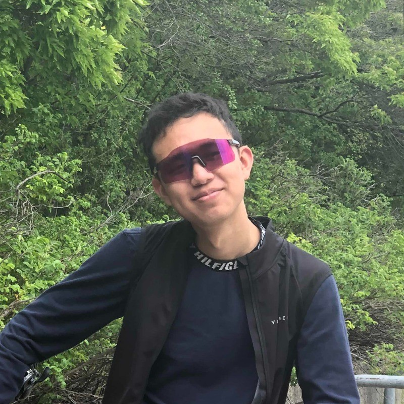

University of Toronto BASc • PEY Co-op Program

Hi, I'm a CivE student studying at UofT. I am interested in a variety of Civil sub-disciplines such as:
TRANSPORTATION INFRASTRUCTURE | CONSTRUCTION MANAGEMENT
STRUCTURAL ENGINEERING | PROJECT DELIVERY
With a sprinkle of Mech and ECE too. I love tinkering around with any CAD, CAM, CAE software I can get my hands on. I also love the outdoors and cycling unreasonable distances and skiing down non-existent slopes.
Cadets Canada
May 2025 – Aug 2025
Decathlon Canada
February 2023 – July 2024
Lewis Design and Construction
June 2023 – Aug 2023
Helped develop a modular, 3D-printed device for real-time cell contractility monitoring and collaborated on a second prototype.
Used ArcGIS Pro and hydrologic tools to delineate the Grand River watershed and prepare detailed drainage and mapping outputs.
Created a BIM-based quantity takeoff and cost estimate for a residential building using Revit and RSMeans.
Led a congestion and decision-analysis study of the station bottleneck and recommended a pathway expansion plus north exit solution.
Managed event content creation and archival workflows for one of Canada’s largest FROSH events.
Captured and edited driving footage for performance reviews, social media, and recruiting while supporting testing operations.
Worked on a multi-disciplinary effort to explore new methods of subsurface blood flow detection in dental applications.
Applied photogrammetry and Gaussian splatting techniques from drone footage to support campus mapping and visualization work.
Designed a SolidWorks payload mechanism and fuselage components for the SAE competition, helping the team reach 4th overall.
Co-led a sustainability-focused redesign of a decommissioned courtyard space into a functional community gathering area.
Developed a concept livery that blended creative aesthetics with branding and aviation identity considerations.
Designed a long-term masterplan concept for an over-capacity airport with upgraded terminal and multimodal transport ideas.
Led outreach and sponsorship efforts that expanded event participation and helped fund the hackathon experience.
Coordinated a large design and content workflow for over 120 pages of yearbook content with a team of 30+.
Organized an 8-day ride across Ontario and Quebec to explore infrastructure and rural communities firsthand.